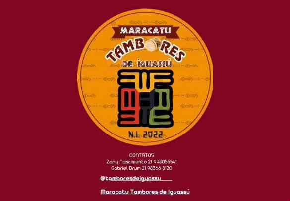

Oficinas gratuitas de maracatu no Patronato, no Centro de Nova Iguaçu.
Maracatu • LUBESNI
Maracatu Tambores de Iguassú
Maracatu, formação e circulação cultural conectando Nova Iguaçu a diferentes territórios.
História
História
O Maracatu Tambores de Iguassú atua com oficinas, apresentações e cortejos, contribuindo para a presença do maracatu e das culturas populares em Nova Iguaçu e na Baixada Fluminense.
O acervo da LUBESNI preserva registros de circulação em universidade, praças e cortejos, além de atividades formativas.

Memória e presença cultural
Trajetória
Marcos organizados a partir do acervo institucional e das fontes públicas indicadas nesta página.
Apresentação e oficina na FEBF/UERJ, apresentação no Projeto Viva Forró em Maricá, cortejo no Aterro do Flamengo e participação na Pequena África.
Participação no Festival da Cultura Nordestina de Nova Iguaçu.
Convocado como suplente no Edital PNAB nº 07/2024 — Prêmio Grupo Caco de Vidro, conforme publicação municipal.
Rastreabilidade
Referências
As fontes abaixo sustentam a história e a trajetória apresentadas. O status de filiação ativa foi informado pela LUBESNI em agosto de 2026.
Dossiê Tambores de Iguassú
Portfólio LUBESNI — págs. 67–71
FENIG — Festival da Cultura Nordestina
YouTube do Maracatu
Informação institucional
Fundação, identidade visual e Instagram oficial estão em atualização pela LUBESNI.
Quando um dado ainda não possui confirmação documental recente, ele é apresentado como informação em atualização pela LUBESNI, sem preenchimento por suposição.